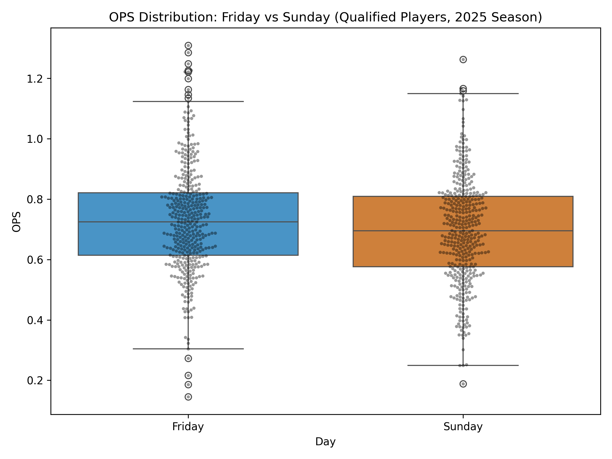

Friday vs Sunday Hitting Analysis
Comparing OPS distributions and player performance across game days.
OPS Distribution Across Days

Top 10 Outlier Players by OPS
Mean Statistic Comparison
Distribution of OPS Differences
← Back
|
Home Page
|
2025 RISP + High-Leverage OPS
|
2024–2025 Stolen Base Trends
|
Friday vs Sunday Hitting Analysis